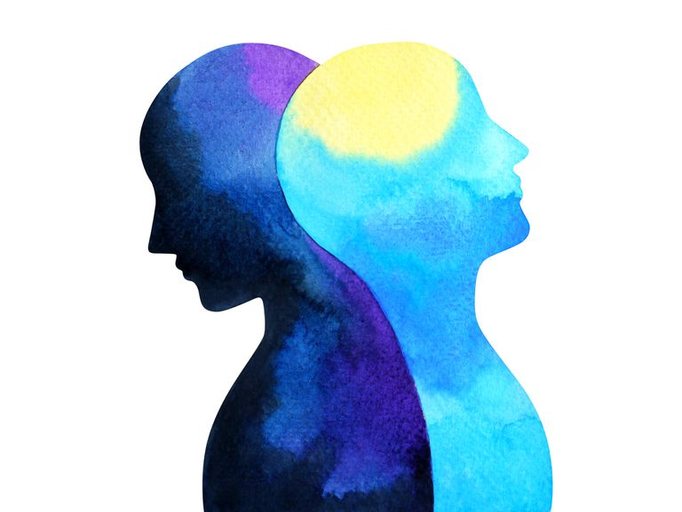

STUFF
Home
Famous Figures
Mental Health
Mental
Illness
Neurodevelopmental Disorders

Bipolar Disorders
Anxiety Disorders
Trauma and Stressor-related Disorders
Dissociative Disorders
Somatic Symptom and Related Disorders
×
Know More
![Everyone feels anxious now and then. It’s a normal emotion. For example, you may feel nervous when faced with a problem at work, before taking a test, or before making an important decision. Anxiety disorders are different, though. They are a group of mental illnesses, and the distress they cause can keep you from carrying on with your life normally. For people who have one, worry and fear are constant and overwhelming, and can be disabling. But with treatment, many people can manage those feelings and get back to a fulfilling life.](images/anxiety.jpg)
![Trauma- and stressor-related disorders involve exposure to a traumatic or stressful event. Two of the trauma-related disorders are acute stress disorder (ASD) and posttraumatic stress disorder (PTSD). ASD and PTSD are similar except that ASD typically begins immediately after the trauma and lasts from 3 days to 1 mo, whereas PTSD lasts for more than 1 mo, either as a continuation of ASD or as a separate occurrence that begins up to 6 mo after the trauma. Previously, trauma- and stressor-related disorders were considered anxiety disorders. However, they are now considered distinct because many patients do not have anxiety but instead have symptoms of anhedonia or dysphoria, anger, aggression, or dissociation.](images/trauma.jpg)
![Somatic symptom and related disorders is the name for a group of conditions in which the physical pain and symptoms a person feels are related to psychological factors. These symptoms can’t be traced to a specific physical cause. In people who have a somatic symptom and related disorders, medical test results are either normal or don’t explain the person’s symptoms. People who have this disorder may have several medical evaluations and tests to be sure that they don’t have another illness. They often become very worried about their health because they don’t know what’s causing their health problems. Their symptoms are similar to the symptoms of other illnesses and may last for several years. People who have a somatoform disorder are not faking their symptoms. The pain that they feel is real.](images/somatic.png)